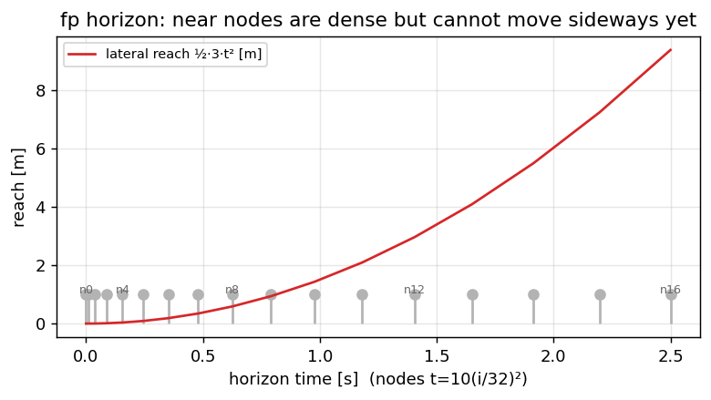

fp — MPC в области времени, который едет#
Игрушка оптимизировала вдоль пути. Боевой fp оптимизирует вдоль времени: предсказывает,
где машина будет через 0.01 … 2.5 с на сетке flowpilot, платит за ошибку опоры, ошибку курса и скорость
руления и — чего игрушка не умела — компенсирует 0.35 с, за которые рулевой тракт отвечает. Эта глава
собирает его в семь шагов, затем измеряет, где горизонт не помогает, перечисляет ручки телефона и
замыкает контур в MetaDrive.
Код: lateral/fp_planner.cpp, lateral/flowpilot_mpc.cpp (\(N{=}16\), сетка по времени → 2.5 с), сменный
численный метод kappa_solver_grad / kappa_solver_acados.
Модель fp (MPC flowpilot в области времени)#
По умолчанию на дороге (lane_keep_controller=fp). Код: lateral/fp_planner.cpp и
lateral/flowpilot_mpc.cpp, метод выбирается в Planner через makeKappaSolver.
Противоположность \(\delta\)-MPC в области пути, разобранного выше:
игрушка в области пути (выше) |
flowpilot |
|
|---|---|---|
переменная решения |
угол колеса \(\delta\) по \(s\) |
производная скорости рыска \(u=\dot r\) во времени |
горизонт |
\(N{=}20\), \(ds\sim 0.5\) м |
\(N{=}16\), \(t_i=10(i/32)^2\) → \(T_f=2.5\) с |
выход |
\(\delta\) |
желаемая кривизна \(\kappa^\star\), затем модель машины → \(\delta\) |
задержка |
взять \(\delta_1\) |
|
fp-1. Эталон во времени#
Полилиния переворачивается в систему openpilot с \(y\) влево (y \leftarrow -y). Отсчёты берутся на расстояниях \(v\cdot t_i\):
Строятся \(y_{\mathrm{ref}}(t)\), \(\psi_{\mathrm{ref}}(t)\), \(r_{\mathrm{ref}}=\dot\psi_{\mathrm{ref}}\).
Если головы ориентации Supercombo есть, \(\psi\) и \(r\) берутся из plan_yaw и plan_yaw_rate.
import numpy as np
N_FP = 16
T_IDX_MAX = 32.0
def t_node(i):
return 10.0 * (i / T_IDX_MAX) ** 2
print("fp time grid [s]:", [round(t_node(i), 3) for i in range(0, N_FP + 1, 4)])
# 0, 0.156, 0.625, 1.406, 2.5
def sample_y_ref(poly_xy, v):
"""poly_xy: Nx2 in left+ frame; return y_ref[0..N]."""
x, y = poly_xy[:, 0], poly_xy[:, 1]
s = np.zeros(len(x))
s[1:] = np.cumsum(np.hypot(np.diff(x), np.diff(y)))
y_ref = []
for i in range(N_FP + 1):
dist = min(v * t_node(i), s[-1])
y_ref.append(float(np.interp(dist, s, y)))
return np.array(y_ref)
# Straight offset 0.25 m left in left+ frame
poly = np.stack([np.linspace(1, 40, 40), 0.25 * np.ones(40)], axis=1)
print("y_ref@v=15:", np.round(sample_y_ref(poly, 15.0)[::4], 3))
fp-2. Динамика (состояние)#
Состояние \(x=(X,Y,\psi,r)\), управление \(u=\dot r\) (угловое ускорение рыска):
\(R_{\mathrm{rot}}\approx L/2\) в нашем конфиге. Машина начинается в начале координат; \(r_0\) засевается из геометрии пути при первом вызове.
def forward_fp(u, v, r0=0.0, R_rot=1.32):
"""u length N; return Y, psi, r trajectories length N+1."""
X = Y = psi = 0.0
r = r0
Ys, psis, rs = [Y], [psi], [r]
for i in range(N_FP):
dt = max(t_node(i + 1) - t_node(i), 1e-4)
X = X + dt * (v * np.cos(psi) - R_rot * np.sin(psi) * r)
Y = Y + dt * (v * np.sin(psi) + R_rot * np.cos(psi) * r)
psi = psi + dt * r
r = r + dt * u[i]
Ys.append(Y); psis.append(psi); rs.append(r)
return np.array(Ys), np.array(psis), np.array(rs)
fp-3. Стоимость#
С \(v_{\mathrm{off}}=v+\mathrm{speed\_offset}\) (по умолчанию +10):
Примерно поставляемые веса: path_weight=1, heading_weight=0.11, lat_jerk_weight=0.05,
fp_steering_rate_weight=400.
def cost_fp(u, y_ref, v, w_y=1.0, w_psi=0.11, w_srate=400.0, speed_offset=10.0):
Y, psi, r = forward_fp(u, v)
v_off = v + speed_offset
j = 0.0
psi_ref = np.zeros_like(y_ref) # toy: straight
for i in range(N_FP + 1):
j += w_y * (Y[i] - y_ref[i]) ** 2
j += w_psi * (v_off * (psi[i] - psi_ref[i])) ** 2
if i < N_FP:
j += w_srate * (u[i] / (v + 0.1)) ** 2
return j
v = 15.0
y_ref = sample_y_ref(poly, v)
# Path-only view (w_srate=0): small +u pulls Y toward +0.25
for u0 in (0.0, 0.01):
u = np.full(N_FP, u0)
Y, _, _ = forward_fp(u, v)
j_path = cost_fp(u, y_ref, v, w_srate=0.0)
j_full = cost_fp(u, y_ref, v, w_srate=400.0)
print(f"u={u0:+.2f} Y_end={Y[-1]:+.3f} J_path={j_path:.3f} J_full={j_full:.3f}")
\(u{=}0.01\) снижает стоимость пути и заканчивает около эталонных 0.25 м; полное \(J\) всё равно растёт из-за слагаемого по скорости — настоящий градиентный спуск балансирует оба (поставляется fp_steering_rate_weight=400).
fp-4. Решение#
Тёплый старт по предыдущему \(u\); около 50 итераций конечно-разностного градиентного спуска с линейным поиском (gd_step=0.1).
Дух тот же, что у игрушки выше: хорошая затравка важна, горизонт короткий.
fp-5. Кривизна с поправкой на запаздывание (трюк с задержкой)#
После решения читается траектория скорости рыска \(r(t)\) и строится
где \(t_d=\mathrm{fp\_steer\_delay\_s}\) (поставляется 0.35 с), затем \(\kappa^\star\) ограничивается по скорости через
max_lateral_jerk / v². Это порт get_lag_adjusted_curvature из openpilot:
командовать ту кривизну, которая нужна в момент, когда рейка действительно двинется.
def lag_adjusted_kappa(psi_sol, r_sol, v, delay_s=0.35, dt_s=0.08, max_jerk=5.0):
ts = np.array([t_node(i) for i in range(N_FP + 1)])
kappa0 = r_sol[0] / v
psi_d = float(np.interp(delay_s, ts, psi_sol))
avg = psi_d / (v * delay_s)
desired = 2.0 * avg - kappa0
max_rate = max_jerk / (v * v)
return float(np.clip(desired, kappa0 - max_rate * dt_s, kappa0 + max_rate * dt_s))
# Constant-r turn: psi(t)=r0*t → avg=kappa0 → κ*=kappa0 (no change)
r0 = 0.02 * 15.0
ts = np.array([t_node(i) for i in range(N_FP + 1)])
psi = r0 * ts
r = np.full_like(ts, r0)
print("steady turn κ*:", round(lag_adjusted_kappa(psi, r, v=15.0), 5))
fp-6. \(\kappa^\star \to\) угол колеса → PID → HCA#
κ* → vehicle_model (if lat_use_vehicle_model) → δ
→ angle slew / caps → × steer_ratio → angle-PID → HCA torque
Знак: в системе device \(y\) вправо; сервис публикует steer_rad = -steerFromCurvature(...).
Детали масштабирования недокрута — в главе про модель машины.
fp-7. Следующий кадр зрения#
Решаем заново с измеренным frame_dt (а не с фиксированными 0.05). Угловой PID на телефоне идёт от
vehicle/state (около 100 Гц после приёма CAN за 10 мс); темп планировщика остаётся ограничен зрением (около 24 Гц).
Где горизонт не помогает#
Горизонт снимает информационный предел Pure Pursuit — он читает весь путь, а не одну точку. Но не всё, и три вещи, которые он не снимает, каждая была измерена, а не выведена из рассуждений.
1. Устойчивое смещение почти бесплатно в функции стоимости#
fp сбрасывает состояние каждый кадр: \(x_0 = [0, 0, 0, \dot\psi]\). Машина по определению находится точно на
своём эталоне в нулевом узле. Значит наказать устойчивое смещение можно только через дальние узлы — и вот там
сетка времени работает против вас.
V = 15.0
print(f"{'node':>5} {'t, s':>7} {'distance, m':>12} {'lateral reach, m':>17}")
for i in (0, 1, 2, 3, 4, 6, 8, 12, 16):
t = t_node(i)
d = V * t
# How far sideways can the car physically move by then, at a generous 3 m/s^2 of lateral accel?
reach = 0.5 * 3.0 * t * t
print(f"{i:>5} {t:>7.3f} {d:>12.2f} {reach:>17.3f}")
{kind=link}

Рис. 24 Квадратная сетка по времени плотно сэмплирует ближнее поле, но в первых узлах машина физически не может сдвинуться вбок — поэтому постоянное смещение там в косте почти бесплатно.#
Прочитайте колонку доступного бокового смещения. За первые четыре узла машина не может сдвинуться боком больше чем на пару сантиметров, что бы руль ни делал, — поэтому 0.35 м смещения в этих узлах не стоимость, на которую оптимизатор может подействовать, а константа. Узлы, где боковое движение возможно, лежат достаточно далеко, и там доминирует ошибка кривизны.
Измеренное следствие: машина сидела 0.35 м внутри своего же эталона на дугах. И это не вес, который надо
подстроить: прогоны в замкнутом контуре подтвердили, что ни fp_steering_rate_weight (150 против 800), ни
fp_steer_delay_s (0.23 против 0.35) этого не меняют. Устойчивое смещение убирает интегральное слагаемое,
которого в этой постановке нет, либо уже сдвинутый эталон — что и делает
подмешивание разметки, несколькими разделами выше.
2. Удлинять горизонт тоже не помогает#
Очевидный ответ — «взять N = 32, как у flowpilot, вместо наших 16». Проверено, и из этого не следует, потому что сетка квадратичная:
first_second = sum(1 for i in range(N_FP + 1) if t_node(i) <= 1.0)
print(f"our N=16: {first_second} of {N_FP + 1} nodes inside the first second, horizon {t_node(N_FP):.2f} s")
first_second_32 = sum(1 for i in range(33) if 10.0 * (i / 32.0) ** 2 <= 1.0)
print(f"N=32 : {first_second_32} of 33 nodes inside the first second, horizon "
f"{10.0 * (32 / 32.0) ** 2:.2f} s")
print("\nThe near zone is already as densely sampled as theirs. Doubling N adds far nodes, which at equal")
print("weights dilutes the near zone that actually matters, and costs about 4x more to solve under the")
print("gradient solver.")
3. У плана, который оптимизируется, своё смещение#
MPC минимизирует расстояние до эталона. Если эталон неверен, он идеально следит за неверным. На дугах план модели сидит в +0.32 / −0.35 м от центра полосы, и попытка убрать это одним коэффициентом кривизны провалилась поучительно:
параметризованный как постоянное расстояние (\(50.2\kappa\)), он был нестабилен даже внутри одного заезда — 20.2 ниже 12 м/с против 77.2 выше;
верная параметризация — упреждение по времени, \(\tfrac{1}{2}\kappa(vT)^2\), и \(T\) действительно устойчиво по скорости: 0.71–1.03 с;
но не воспроизводимо между заездами: 0.84 с на одном, 0.56 с на другом, потому что у двух заездов был разный выученный рыск камеры (+1.12° против +0.24°), а он меняет warp входа, поэтому сеть видит другое изображение и выдаёт другой план.
Значит коэффициент нельзя запечь: на другой калибровке он добавит своё собственное смещение. Поэтому главным рычагом стало подмешивание разметки, которому не нужно ни одного настраиваемого числа.
4. А когда момент насыщается, всё это неважно#
На измеренных правых дугах момент сидел на потолке HCA ±300 cNm в 65 % кадров (76 % на более раннем заезде, 80 % внутри одного эпизода длиной 12.3 с при R = 130 м). Пока он насыщен, обратной связи нет вовсе: выход оптимизатора меняется, а рейка нет. Лечится это запросом меньшей кривизны, а не более усердным решением.
Что вынести из этого раздела
Каждый предел выше — своего рода. Один структурный (нет интегрального слагаемого), один — не-результат (горизонт и так достаточно длинный), один вышестоящий (собственное смещение плана, связанное с калибровкой) и один физический (актуатор). Понять, на какой из них вы смотрите, — это и есть основная работа, и ни один из них не находится перебором весов.
Ручки на телефоне#
Общие и путь
path_lane_blend_scale,lane_std_good_m,lane_std_bad_m,path_camera_offset_mmin_control_speed_mps,lat_use_vehicle_model,tire_stiffness_factor
fp
fp_steer_delay_s— горизонт \(\kappa\) с поправкой на запаздывание.fp_steering_rate_weight— плавность \(u\).Измеренный
frame_dtиз метк времени.
Честное сравнение#
Одно окно бега, темп зрения \(\gtrsim 9\) Гц: |CTE| медиана/p95, |\(\Delta\)SWA|, прямая и дуга по отдельности.
Инструмент: bag/bag_config_sweep.py --vision-latency ... (умеет перебирать и --blend).
Замкните контур в симуляторе#
Всё в этой части можно прогнать в замкнутом контуре MetaDrive до всякой машины (сборка под хост и установка: Установка):
cd scripts
python3 -m sim.eval --track highway --controllers fp,pure_pursuit --seeds 7
python3 -m sim.eval --list-tracks
highway собран из рабочей области docs/CONTROLLER_LIMITS.md (радиусы 250–700 м); serpentine
сознательно за её пределами. Стенд возит всё, что реализует один вызов, — включая ваш собственный
регулятор:
# not-runnable — the sketch of the adapter; MetaDrive and the harness live outside the book build
class MyPurePursuit:
"""Duck-typed like core/lane_keep.py results: steer_norm in [-1, 1]."""
def __init__(self, wheelbase=2.636, ld=8.0):
self.L, self.ld = wheelbase, ld
def step(self, path_xy, v_mps, max_steer_rad):
delta, _ = pure_pursuit(path_xy, 0.0, 0.0, 0.0, self.ld, 0) # ego frame: x,y,psi = 0
return max(-1.0, min(1.0, delta / max_steer_rad))
Две вещи меняются тихо: путь приходит в связанной системе каждый тик, а на выходе —
нормированный руль: пределы актуатора принадлежат стенду, как на телефоне они принадлежат
Control. И помните, чем симулятор льстит: восприятие идеально — ни σ, ни пропаданий, ни 42 мс
задержки. Контроллер, выигрывающий здесь и проигрывающий на беге, — ожидаемый порядок событий
(docs/SIM_CONTROLLER_TEST.md).
Задания#
Шаги 2–3 игрушечного MPC: какой \(\delta\) побеждает на дуге? Обнулите вес прижатия к \(\delta\) — победитель сдвинулся?
Пример со слиянием: сколько от срезки плана в −0.4 м остаётся при
blend=0.6наy(40)?Уроните σ разметки до 1.6 м в игрушечном примере слияния — чему равно \(d_{\mathrm{prob}}\)?
fp: изменитеdelay_sс 0.1 до 0.35 на траектории с растущим \(r\); как двигается \(\kappa^\star\)?По бегу:
ppпротивfp; отключите модель машины один раз на дуге; переберите подмешивание 0.3 / 0.6 / 1.0.
Дальше: Продольный планировщик